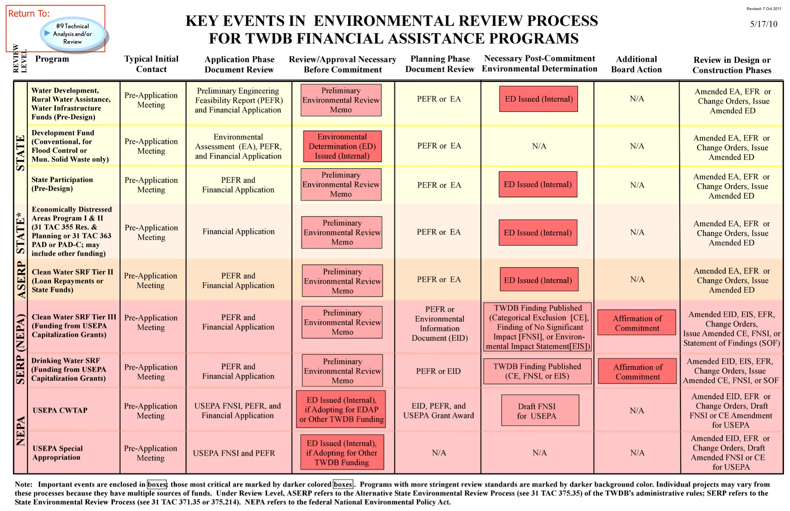

<map name="GraffleExport">
	<area shape=poly coords="245,57,245,115,129,115,129,57,245,57" href="9%20Ag.html">
	<area shape=poly coords="1752,-82,1752,-26,1667,-26,1667,-82,1752,-82" href="TWDB-SWP.html">
	<area shape=poly coords="1913,-90,1913,-37,1806,-37,1806,-90,1913,-90" href="1%20Main.html">
</map>

